✕ CLOSE
WALKABILITY · SUSTAINABLE MOBILITY · PUBLIC TRANSIT · GIS & SPATIAL ANALYSIS
B.Sc. Urban Planning student at Kharazmi University, focused on walkability, sustainable mobility, and public transit — backed by GIS and spatial-analysis skills, including a freelance GIS commission for the Tehran Municipality. I'm also teaching myself to build the small tools that make that work faster.
Commissioned to evaluate the functional-radius coverage of Metro stations, BRT lines, and municipal produce markets (Tarehbar) against residential parcels across city districts.
Independently prepared the complete land-preparation report and site-allocation plan, using base data supplied by the supervising professor.
Contributed to the site-recognition phase of a design project led directly by the faculty's own urban planning and architecture team.
Aside — one term's studio instructor also served as Tehran Municipality's Deputy for Urban Planning & Architecture; class discussions with him regularly touched on underground urban space policy and Tehran's emerging TOD framework.
Community engagement — founded and coordinated Sharkopolo, a series of guided urban walks through historic Tehran neighborhoods (Tajrish, Laleh Zaar, Si-Meter Passage from Farmanfarma Garden to Tehran Bazaar & Zaman Museum). Organized tours engaging 20–80 participants through 2023–2024, building community engagement with Tehran's urban fabric and neighborhood history within the university and broader public.
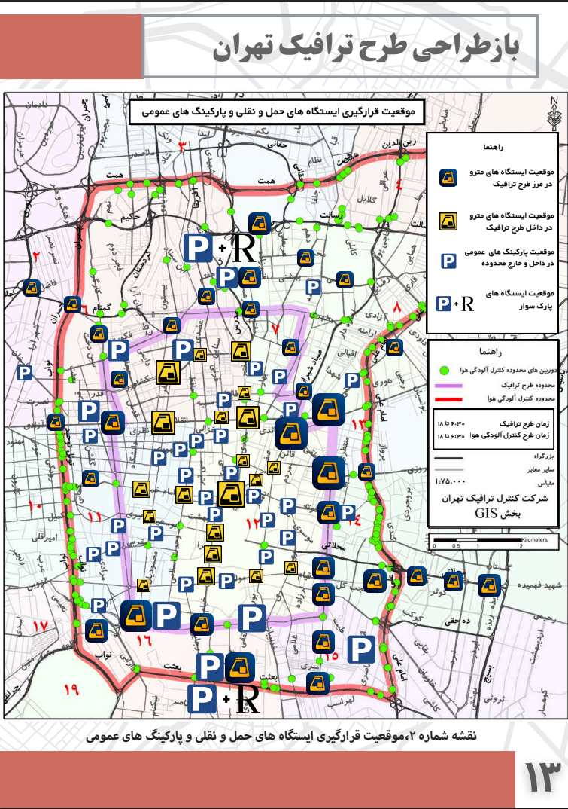
Strategic examination of Tehran's traffic management system and congestion-reduction policy.
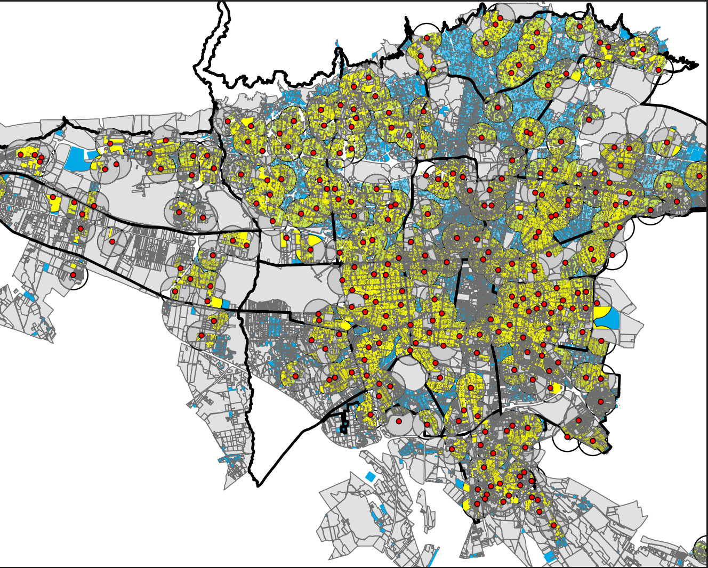
Freelance GIS commission for the Tehran Municipality Center for Communications & International Affairs (Public Opinion Research Unit).
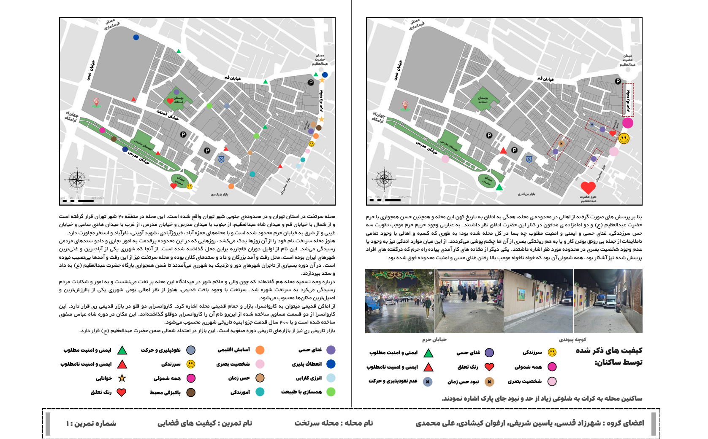
Neighborhood-scale study of spatial structure, land use, and accessibility.
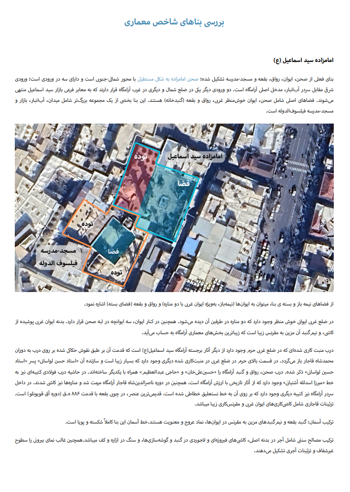
Paid contribution to the site-recognition phase of a project led by the Faculty of Art & Architecture.
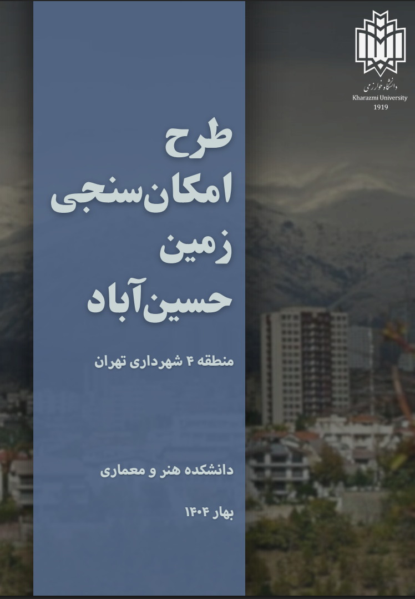
Full land-preparation report and site-allocation plan, delivered to Kharazmi University and Tehran Municipality.
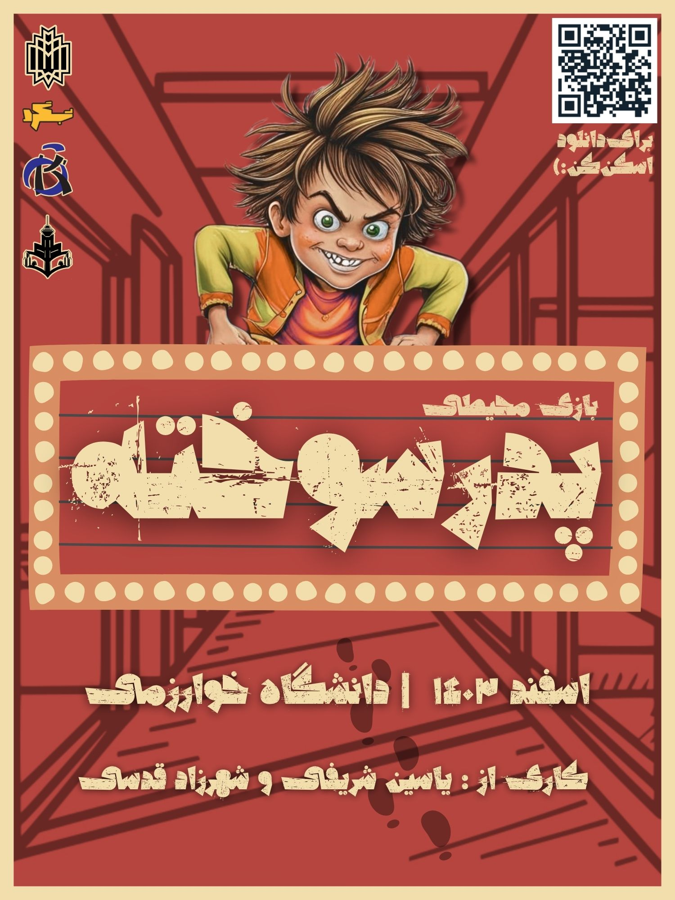
Two experimental games — 1336 and Pedarsookhteh — exploring how people perceive and interact with urban space.
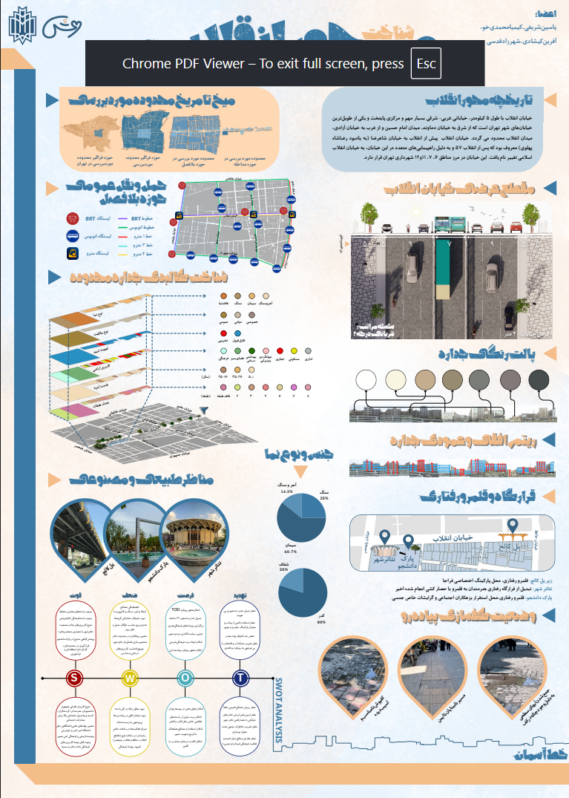
Studio project reworking a central pedestrian corridor around walkability principles.
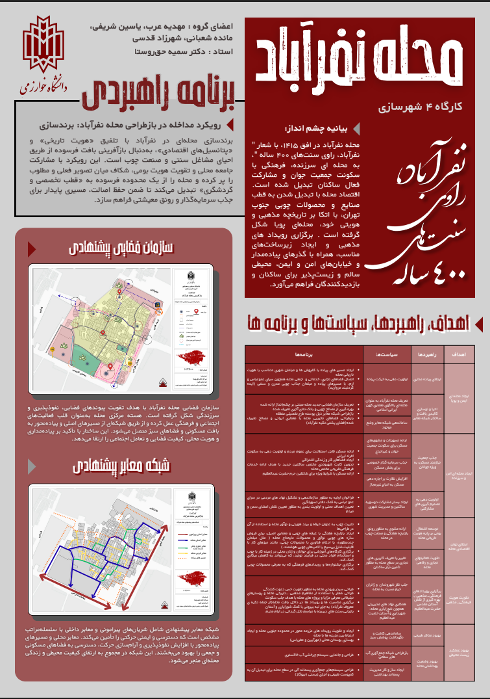
Studio project on regenerating a deteriorated neighborhood fabric.
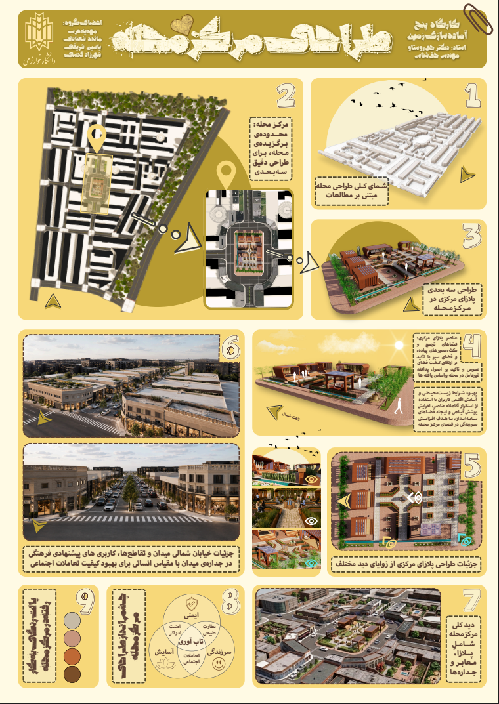
Studio project on disaster-preparedness planning at the city scale.
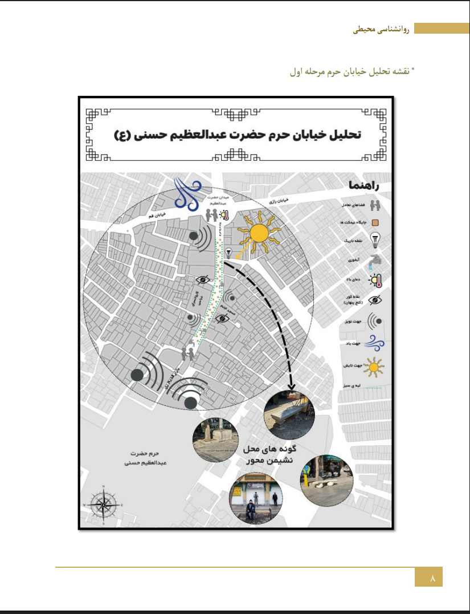
Group coursework project; co-led content and cartographic outputs within a 5-member team.
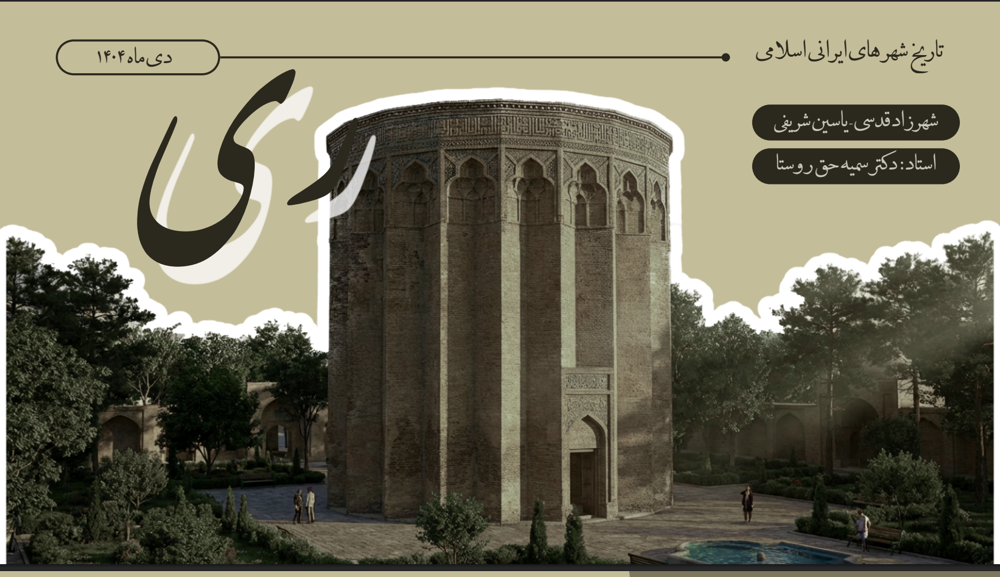
In-depth presentation tracing the historical and spatial development of Shahr-e Rey.
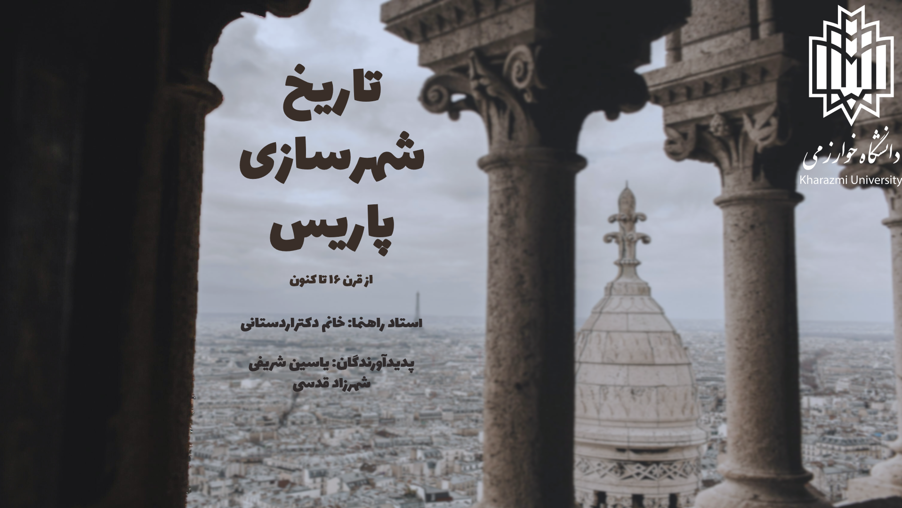
Comparative presentation on the historical evolution of major world cities.
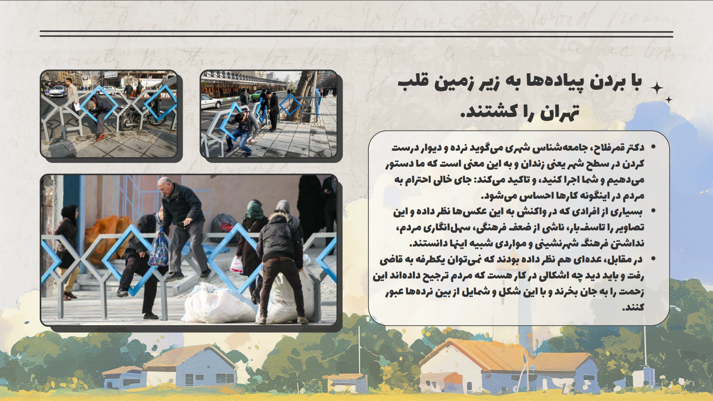
Presentations on pedestrian-oriented design and the role of walkable passages in urban life.
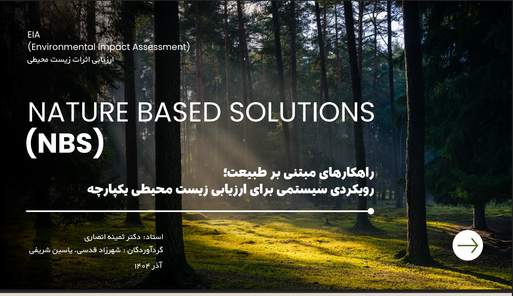
Presentation on nature-based approaches to urban environmental challenges.
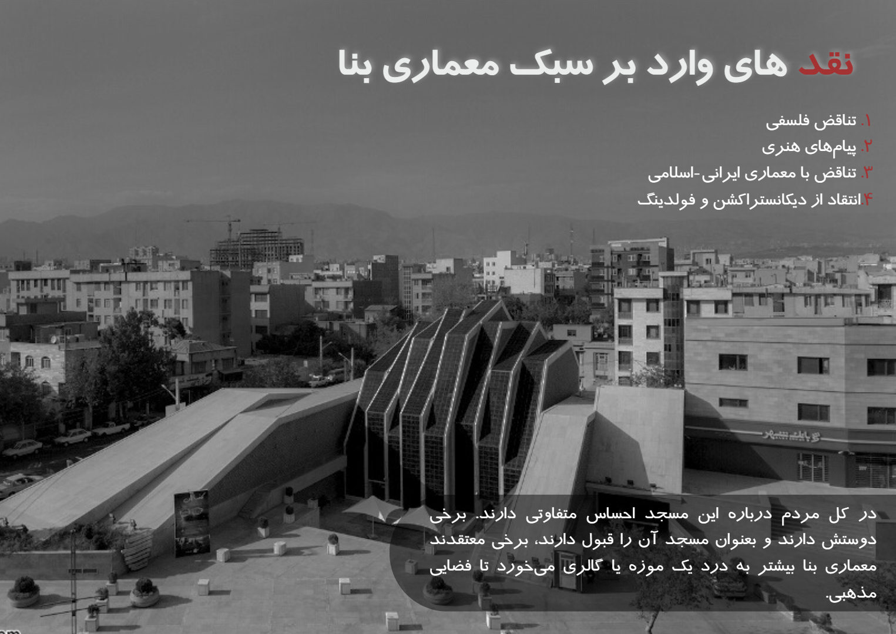
Stylistic and architectural analysis of the Imam Reza Mosque.
A pre-test/post-test study of biophilic pedestrian environments and perceived stress, measured with the Perceived Stress Scale and read through Attention Restoration Theory and Stress Reduction Theory.
Combined quantitative satisfaction scoring with inductive thematic analysis to surface governance issues in transportation, infrastructure, transparency, and resource prioritization — closing with policy-oriented recommendations.
A small Python tool I'm building and steadily improving: give it a place name, it geocodes it and returns latitude/longitude. This box calls the same public geocoding API my script uses — type a place below.
main.py — takes a place name, queries OpenStreetMap's Nominatim API, and returns name / latitude / longitude. Next up: batch lookups and exporting results straight to GIS-ready formats.